- កំណត់និយមន័យនៃប៉ារ៉ាបូល
- កំណត់សមីការស្តង់ដានៃប៉ារ៉ាបូល
- បំប្លែងសមីការទូទៅនៃប៉ារ៉ាបូលទៅជាសមីការស្តង់ដា ។
ជំពូក 10 : កោនិក
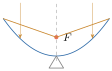
រូបមួយនៅក្នុងប្លង់ដែលបានតាងដោយសមីការលីនេអ៊ែរ \(\displaystyle x\) និង \(\displaystyle y\) គឺជាបន្ទាត់មួយ ។ តើរូបដែលបានតាងដោយសមីការដឺក្រេទី 2 ជារូបអ្វី? នៅក្នុងជំពូកនេះ គេនឹងសិក្សាលក្ខណៈគ្រឹះនៃខ្សែកោងដឺក្រេទី 2 ។
ខ្សែកោងដឺក្រេទី 2 កើតឡើងដោយគេកាត់កោនមួយដោយប្លង់មួយ ។ ដូច្នេះខ្សែកោងដឺក្រេទី 2 ត្រូវបានគេហៅថា “ខ្សែកោងកោនិក” ហើយខ្សែកោងទាំងនោះត្រូវបានគេសិក្សាតាំងតែពីប្រទេសក្រិចនៅក្នុងសម័យបុរាណកាលមកម៉្លេះ ។
ជាពិសេស ការរកឃើញរបស់លោកអាប៉ូឡូនុស Apollonius ជាគណិតវិទូជនជាតិក្រិច (260 - 200 មុនគ.ស.) បានបញ្ជាក់ច្បាស់លាស់និងមានឈ្មោះល្បីរន្ទឺ ។ គាត់បានធ្វើចំណាត់ថ្នាក់មុខកាត់កោនិកកាត់ដោយប្លង់មួយជាបីប្រភេទ ហើយប្រភេទទាំងនោះមានឈ្មោះថា អេលីប ប៉ារ៉ាបូល និង អ៊ីពែបូល ។ យើងបានចងចាំនូវពាក្យទាំងនេះ អាស្រ័យទៅនឹងខ្សែកោងដែលបានបង្កើត ដោយមុខកាត់ទាំងនេះ ។
1. សេចក្តីផ្តើម
គេមានកោនពីរប៉ុនគ្នា ហើយដាក់ឱ្យទល់កំពូលគ្នាដូចរូប ។ គេយកប្លង់មួយកាត់កោននេះ (មិនកាត់តាមកំពូលកោន) ហើយស្របទៅនឹងជនេត្រកោននោះ ។ ប្រសព្វដែលបានមកនេះមានរាងជាខ្សែកោងមួយ ហៅថា ប៉ារ៉ាបូល ។ ដូច្នេះ ប៉ារ៉ាបូល គឺជា កោនិកមួយ ។
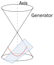
2. និយមន័យនៃប៉ារ៉ាបូល
ឧទាហរណ៍ : នៅលើក្រដាសមួយសន្លឹក
គេគូសបន្ទាត់ \(\displaystyle \Delta\) មួយ និងគូសបន្ទាត់ឱ្យស្របនឹងបន្ទាត់ \(\displaystyle \Delta\) ជាបន្តបន្ទាប់ដែល :
- បន្ទាត់ \(\displaystyle l_{1}\) មានចម្ងាយ \(\displaystyle 1\) ឯកតាពីបន្ទាត់ \(\displaystyle \Delta\)
- បន្ទាត់ \(\displaystyle l_{2}\) មានចម្ងាយ \(\displaystyle 1\) ឯកតាពីបន្ទាត់ \(\displaystyle l_{1}\)
- បន្ទាត់ \(\displaystyle l_{3}\) មានចម្ងាយ \(\displaystyle 1\) ឯកតាពីបន្ទាត់ \(\displaystyle l_{2}\)
- បន្ទាត់ \(\displaystyle l_{4}\) មានចម្ងាយ \(\displaystyle 1\) ឯកតាពីបន្ទាត់ \(\displaystyle l_{3} \dots\) ។
- ដៅចំណុច \(\displaystyle F\) មួយនៅលើបន្ទាត់ \(\displaystyle l_{2}\) និងចំណុច \(\displaystyle V\) មួយនៅលើបន្ទាត់ \(\displaystyle l_{1}\) ដោយឱ្យ \(\displaystyle (FV) \perp \Delta\) នោះ \(\displaystyle VF = d(V, \Delta) = 1\) ។
- ដោយយក \(\displaystyle F\) ជាផ្ចិត រួចគូសរង្វង់ដែលមានកាំ \(\displaystyle 1\) ឯកតា \(\displaystyle 2\) ឯកតា \(\displaystyle 3\) ឯកតា \(\displaystyle 4\) ឯកតា \(\displaystyle \dots\) រង្វង់ទាំងនេះកាត់បន្ទាត់ \(\displaystyle l_{1}, l_{2}, l_{3}, l_{4}, \dots\) រៀងគ្នាត្រង់ពីរចំណុច ហើយចំណុចទាំងនេះមានចម្ងាយស្មើគ្នាពីចំណុច \(\displaystyle F\) និងបន្ទាត់ \(\displaystyle \Delta\) ។ បើគេគូសខ្សែកោងកាត់តាមចំណុច \(\displaystyle V\) និងចំណុចប្រសព្វទាំងនោះ គេបានខ្សែកោងមួយ ហៅថា ប៉ារ៉ាបូល ។
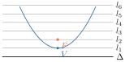
និយមន័យ ប៉ារ៉ាបូល គឺជាសំណុំនៃចំណុចនៅក្នុងប្លង់ ដែលស្ថិតនៅចម្ងាយស្មើគ្នាពី ចំណុចនឹងមួយ និងបន្ទាត់នឹងមួយ នៅក្នុងប្លង់នោះ ។ ចំណុចនឹងហៅថា កំណុំ និងបន្ទាត់នឹងហៅថា បន្ទាត់ប្រាប់ទិស ។
គេតាង៖
- កំណុំ ដោយអក្សរ \(\displaystyle F\)
- បន្ទាត់ប្រាប់ទិស ដោយអក្សរ \(\displaystyle \Delta\)
- បន្ទាត់ដែលកាត់តាមកំណុំ \(\displaystyle F\) ហើយកែងនឹងបន្ទាត់ \(\displaystyle \Delta\) ហៅថា អ័ក្សឆ្លុះ នៃប៉ារ៉ាបូល
- \(\displaystyle V\) ជាចំណុចប្រសព្វរវាងប៉ារ៉ាបូលនិងអ័ក្សឆ្លុះ ហៅថា កំពូល នៃប៉ារ៉ាបូល
- \(\displaystyle V\) ជាចំណុចកណ្តាលនៃអង្កត់ដែលភ្ជាប់រវាងកំណុំ \(\displaystyle F\) និងបន្ទាត់ប្រាប់ទិស \(\displaystyle \Delta\) ។
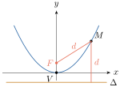
សម្គាល់៖ គ្រប់ចំណុច \(\displaystyle M\) នៃប៉ារ៉ាបូលមានកំណុំ \(\displaystyle F\) និងបន្ទាត់ប្រាប់ទិស \(\displaystyle \Delta\) គេបាន \(\displaystyle MF = d(M, \Delta)\) ។
3. សមីការនៃប៉ារ៉ាបូល
នៅក្នុងមេរៀននេះ យើងសិក្សាតែប៉ារ៉ាបូលដែលមាន បន្ទាត់ប្រាប់ទិសស្របនឹងអ័ក្សអរដោនេ និងបន្ទាត់ប្រាប់ទិសស្របនឹងអ័ក្សអាប់ស៊ីសតែប៉ុណ្ណោះ ។
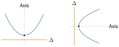
3.1. សមីការស្តង់ដានៃប៉ារ៉ាបូលមានកំពូលត្រង់គល់នៃអ័ក្សកូអរដោនេ
គេអាចប្រើនិយមន័យ ដើម្បីរកសមីការនៃប៉ារ៉ាបូលដែលមានកំពូល \(\displaystyle V(0,0)\) ។ ដោយសមីការនេះអាស្រ័យលើកំណុំ និងបន្ទាត់ប្រាប់ទិស ដូច្នេះយើងត្រូវកំណត់កូអរដោនេកំណុំ និងសមីការបន្ទាត់ប្រាប់ទិសនៃប៉ារ៉ាបូលជាមុនសិន ។
3.1.1. ករណីបន្ទាត់ប្រាប់ទិស Δ ស្របនឹងអ័ក្សអរដោនេ
នៅក្នុងករណីនេះ គេបាន ប៉ារ៉ាបូលមានអ័ក្សឆ្លុះជាអ័ក្សអាប់ស៊ីស ។ យក \(\displaystyle (p, 0)\) ជាកូអរដោនេនៃកំណុំ \(\displaystyle F\) នោះបន្ទាត់ប្រាប់ទិស \(\displaystyle \Delta\) មានសមីការ \(\displaystyle x = -p\) ឬ \(\displaystyle \Delta : x + p = 0\) ។
តាង \(\displaystyle M(x, y)\) ជាចំណុចមួយស្ថិតនៅលើប៉ារ៉ាបូល នោះ \(\displaystyle MF = \sqrt{(x - p)^{2} + (y - 0)^{2}} = \sqrt{(x - p)^{2} + y^{2}}\) ហើយ \(\displaystyle d(M, \Delta) = \frac{|x + 0 \cdot y + p|}{\sqrt{1^{2} + 0^{2}}} = |x + p|\)
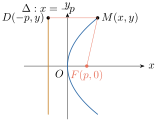
តាមនិយមន័យប៉ារ៉ាបូល
នៅក្នុងសមីការនេះ \(\displaystyle p\) អាចជាចំនួនវិជ្ជមាន ឬជាចំនួនអវិជ្ជមាន ។
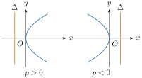
3.1.2. ករណីបន្ទាត់ប្រាប់ទិស Δ ស្របនឹងអ័ក្សអាប់ស៊ីស
នៅក្នុងករណីនេះ គេបាន ប៉ារ៉ាបូលមានអ័ក្សឆ្លុះជាអ័ក្សអរដោនេ ។ យក \(\displaystyle (0, p)\) ជាកូអរដោនេនៃកំណុំ \(\displaystyle F\) នោះបន្ទាត់ប្រាប់ទិស \(\displaystyle \Delta\) មានសមីការ \(\displaystyle y = -p\) ឬ \(\displaystyle \Delta : y + p = 0\) ។
តាង \(\displaystyle M(x, y)\) ជាចំណុចមួយស្ថិតនៅលើប៉ារ៉ាបូល នោះ \(\displaystyle MF = \sqrt{(x - 0)^{2} + (y - p)^{2}} = \sqrt{x^{2} + (y - p)^{2}}\) ហើយ \(\displaystyle d(M, \Delta) = \frac{|0 \cdot x + y + p|}{\sqrt{0^{2} + 1^{2}}} = |y + p|\)
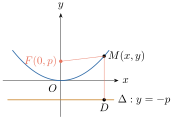
តាមនិយមន័យនៃប៉ារ៉ាបូល
នៅក្នុងសមីការនេះ \(\displaystyle p\) អាចជាចំនួនវិជ្ជមាន ឬជាចំនួនអវិជ្ជមាន ។
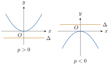
សមីការស្តង់ដានៃប៉ារ៉ាបូលដែលមានកំពូលជាគល់អ័ក្សកូអរដោនេ
បើអ័ក្សឆ្លុះជាអ័ក្សអាប់ស៊ីស នោះប៉ារ៉ាបូលមានសមីការស្តង់ដា \(\displaystyle y^{2} = 4px\) ហើយមានកំណុំ \(\displaystyle F(p, 0)\) និងបន្ទាត់ប្រាប់ទិសមានសមីការ \(\displaystyle x = -p\) ។
- បើ \(\displaystyle p > 0\) នោះប៉ារ៉ាបូលបែរភាពផតទៅរកទិស \(\displaystyle x > 0\)
- បើ \(\displaystyle p < 0\) នោះប៉ារ៉ាបូលបែរភាពផតទៅរកទិស \(\displaystyle x < 0\) ។
បើអ័ក្សឆ្លុះជាអ័ក្សអរដោនេ នោះប៉ារ៉ាបូលមានសមីការស្តង់ដា \(\displaystyle x^{2} = 4py\) ហើយមានកំណុំ \(\displaystyle F(0, p)\) និងបន្ទាត់ប្រាប់ទិសមានសមីការ \(\displaystyle y = -p\) ។
- បើ \(\displaystyle p > 0\) នោះប៉ារ៉ាបូលបែរភាពផតទៅរកទិស \(\displaystyle y > 0\)
- បើ \(\displaystyle p < 0\) នោះប៉ារ៉ាបូលបែរភាពផតទៅរកទិស \(\displaystyle y < 0\) ។
វិធីសង់ក្រាបតាងប៉ារ៉ាបូល :
- ដៅកំពូល កំណុំ និងសង់បន្ទាត់ប្រាប់ទិស
- កំណត់ទិសនៃភាពផតនៃប៉ារ៉ាបូល
ដៅចំណុចកាត់ :
- របៀបទី 1
បើកំណុំ \(\displaystyle F(0, p)\) នោះយកចំណុចកាត់ \(\displaystyle y = p\) និង \(\displaystyle x = \pm 2p\)
បើកំណុំ \(\displaystyle F(p, 0)\) នោះយកចំណុចកាត់ \(\displaystyle x = p\) និង \(\displaystyle y = \pm 2p\) - របៀបទី 2
ជំហានទី 1 : ត្រង់កំណុំ គូសអង្កត់មានប្រវែងស្មើ \(\displaystyle 4|p|\) (អង្កត់នេះមានអ័ក្សឆ្លុះជាមេដ្យាទ័រ)
ជំហានទី 2 : គេបានចំណុចចុងនៃអង្កត់នេះ ជាចំណុចកាត់របស់ប៉ារ៉ាបូល ។
- របៀបទី 1
រកកូអរដោនេកំពូល កំណុំ និងសមីការបន្ទាត់ប្រាប់ទិសនៃប៉ារ៉ាបូល \(\displaystyle x^{2} = 8y\) រួចសង់ក្រាបតាងប៉ារ៉ាបូលនេះ ។
- កំណត់កូអរដោនេកំពូល កំណុំ និងសមីការបន្ទាត់ប្រាប់ទិសនៃប៉ារ៉ាបូល
គេមានសមីការប៉ារ៉ាបូល \(\displaystyle x^{2} = 8y\)
គេបានសមីការ \(\displaystyle x^{2} = 8y\) មានទម្រង់ \(\displaystyle x^{2} = 4py\) នោះ \(\displaystyle 4p = 8 \implies p = \frac{8}{4} = 2\)
កូអរដោនេកំពូល \(\displaystyle V(0, 0)\)
កូអរដោនេកំណុំ \(\displaystyle F(0, p) = F(0, 2)\)
សមីការបន្ទាត់ប្រាប់ទិស \(\displaystyle \Delta : y = -p = -2\)
ដូច្នេះ ប៉ារ៉ាបូលនេះមាន កំពូល \(\displaystyle V(0, 0)\) កំណុំ \(\displaystyle F(0, 2)\) និងសមីការបន្ទាត់ប្រាប់ទិស \(\displaystyle y = -2\) ។ - សង់ក្រាបតាងប៉ារ៉ាបូល \(\displaystyle x^{2} = 8y\)
ភាពផត : បែរភាពផតទៅរក \(\displaystyle y > 0\) ព្រោះ \(\displaystyle p = 2 > 0\)
មានកំពូល \(\displaystyle V(0, 0)\) កំណុំ \(\displaystyle F(0, 2)\) និងសមីការបន្ទាត់ប្រាប់ទិស \(\displaystyle y = -2\)
ចំណុចកាត់ : យកចំណុចកាត់ \(\displaystyle \begin{cases} y = p = 2 \\ x = \pm 2p = \pm 4 \end{cases}\)
គេបាន ប៉ារ៉ាបូលកាត់ចំណុច \(\displaystyle (-4, 2)\) និង \(\displaystyle (4, 2)\) ។
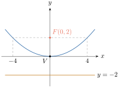
រកសមីការស្តង់ដានៃប៉ារ៉ាបូលដែលមានកំណុំត្រង់ចំណុច \(\displaystyle (-2, 0)\) និងបន្ទាត់ប្រាប់ទិសមានសមីការ \(\displaystyle x = 2\) ។
កំណត់សមីការស្តង់ដានៃប៉ារ៉ាបូល បម្រាប់ : កំណុំ \(\displaystyle F(-2, 0)\) និងបន្ទាត់ប្រាប់ទិស \(\displaystyle \Delta : x = 2\) គេបាន ប៉ារ៉ាបូលនេះមានអ័ក្សឆ្លុះជាបន្ទាត់ដេក \(\displaystyle y = 0\) និងកាត់បន្ទាត់ប្រាប់ទិស \(\displaystyle x = 2\) ត្រង់ចំណុច \(\displaystyle (2, 0)\) កូអរដោនេកំពូល \(\displaystyle \left(\frac{-2 + 2}{2}, \frac{0 + 0}{2}\right) = V(0, 0)\)
- សមីការស្តង់ដានៃប៉ារ៉ាបូលនេះទម្រង់ \(\displaystyle y^{2} = 4px\)
ដោយប៉ារ៉ាបូលមានកំណុំ \(\displaystyle F(-2, 0)\) ត្រូវនឹងកំណុំ \(\displaystyle F(p, 0)\) នោះ \(\displaystyle (p, 0) = (-2, 0) \implies p = -2\)
នាំឱ្យ សមីការប៉ារ៉ាបូល \(\displaystyle y^{2} = 4px = 4(-2)x = -8x\)
ដូច្នេះ សមីការស្តង់ដានៃប៉ារ៉ាបូលគឺ \(\displaystyle y^{2} = -8x\) ។
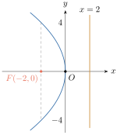
ប៉ារ៉ាបូលមួយមានកំពូលត្រង់ចំណុច \(\displaystyle (0, 0)\) និងកំណុំស្ថិតនៅលើអ័ក្សអរដោនេ ។
- ក. រកសមីការស្តង់ដានៃប៉ារ៉ាបូល បើវាកាត់តាមចំណុច \(\displaystyle A(4, 12)\) ។
- ខ. រកតម្លៃនៃ \(\displaystyle y_{1}\) បើ \(\displaystyle B(3, y_{1})\) ស្ថិតនៅលើប៉ារ៉ាបូល ។
- ក. កំណត់សមីការស្តង់ដានៃប៉ារ៉ាបូល
បម្រាប់ : ប៉ារ៉ាបូលមានកំពូល \(\displaystyle V(0, 0)\) និងកំណុំស្ថិតនៅលើអ័ក្សអរដោនេនោះ
សមីការស្តង់ដាមានទម្រង់ \(\displaystyle x^{2} = 4py\)
ដោយប៉ារ៉ាបូលកាត់ចំណុច \(\displaystyle (4, 12)\) នោះ \(\displaystyle 4^{2} = 4p(12) \implies p = \frac{1}{3}\)
នាំឱ្យ សមីការប៉ារ៉ាបូល \(\displaystyle x^{2} = 4py = 4\left(\frac{1}{3}\right)y = \frac{4}{3}y\)
ដូច្នេះ សមីការស្តង់ដានៃប៉ារ៉ាបូលគឺ \(\displaystyle x^{2} = \frac{4}{3}y\) - ខ. គណនាតម្លៃនៃ \(\displaystyle y_{1}\)
ដោយចំណុច \(\displaystyle B(3, y_{1})\) ស្ថិតនៅលើប៉ារ៉ាបូល \(\displaystyle x^{2} = \frac{4}{3}y\)
នោះ \(\displaystyle 9 = \frac{4}{3}y_{1} \implies y_{1} = \frac{27}{4}\)
ដូច្នេះ តម្លៃ \(\displaystyle y_{1} = \frac{27}{4}\) ។
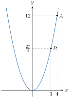
រកកូអរដោនេកំពូល កំណុំ និងសមីការបន្ទាត់ប្រាប់ទិសនៃប៉ារ៉ាបូល \(\displaystyle y^{2} = -6x\) រួចសង់ប៉ារ៉ាបូលនោះ ។
មើលចម្លើយ
កំពូល \(\displaystyle V(0, 0)\) កំណុំ \(\displaystyle F\left(-\frac{3}{2}, 0\right)\) និងសមីការបន្ទាត់ប្រាប់ទិស \(\displaystyle x = \frac{3}{2}\) ។
រកសមីការស្តង់ដានៃប៉ារ៉ាបូល ក្នុងករណីដូចខាងក្រោម
- ក. កំពូល \(\displaystyle V(0, 0)\) និងកំណុំ \(\displaystyle F\left(0, -\frac{3}{2}\right)\)
- ខ. កំណុំ \(\displaystyle F(2, 0)\) និងបន្ទាត់ប្រាប់ទិសមានសមីការ \(\displaystyle x = -2\) ។
មើលចម្លើយ
- ក. \(\displaystyle x^{2} = -6y\)
- ខ. \(\displaystyle y^{2} = 8x\)
3.2. សមីការស្តង់ដានៃប៉ារ៉ាបូលមានកំពូលខុសពីគល់តម្រុយនៃអ័ក្សកូអរដោនេ
គេប្រើនិយមន័យនៃប៉ារ៉ាបូល ដើម្បីរកសមីការនៃប៉ារ៉ាបូលដែលមានកំពូល \(\displaystyle V(h, k)\) ។
3.2.1. ករណីបន្ទាត់ប្រាប់ទិស Δ ស្របនឹងអ័ក្សអរដោនេ
គេបាន ប៉ារ៉ាបូលមានអ័ក្សឆ្លុះស្របអ័ក្សអាប់ស៊ីស ។ យក \(\displaystyle (h + p, k)\) ជាកូអរដោនេនៃកំណុំ \(\displaystyle F\) នោះសមីការបន្ទាត់ប្រាប់ទិស \(\displaystyle \Delta : x = h - p\) និង \(\displaystyle \Delta : x - h + p = 0\) ។ តាង \(\displaystyle M(x, y)\) ជាចំណុចមួយស្ថិតនៅលើប៉ារ៉ាបូល នោះ \(\displaystyle MF = \sqrt{(x - h - p)^{2} + (y - k)^{2}}\) និង \(\displaystyle d(M, \Delta) = \frac{|x + 0y - h + p|}{\sqrt{(1)^{2} + (0)^{2}}} = |x - h + p|\)
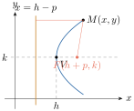
តាមនិយមន័យនៃប៉ារ៉ាបូល
នេះជាសមីការស្តង់ដានៃប៉ារ៉ាបូលដែលមានកំពូល \(\displaystyle (h, k)\) និងអ័ក្សឆ្លុះស្របអ័ក្សអាប់ស៊ីស ។
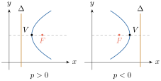
3.2.2. ករណីបន្ទាត់ប្រាប់ទិស Δ ស្របនឹងអ័ក្សអាប់ស៊ីស
ដូចគ្នាដែរ ប៉ារ៉ាបូលដែលមានកំពូល \(\displaystyle (h, k)\) និងមានបន្ទាត់ប្រាប់ទិស \(\displaystyle \Delta\) ស្របអ័ក្សអាប់ស៊ីស គេបាន ប៉ារ៉ាបូលមានអ័ក្សឆ្លុះស្របអ័ក្សអរដោនេនិងកំណុំ \(\displaystyle F(h, k + p)\)
- សមីការបន្ទាត់ប្រាប់ទិស \(\displaystyle \Delta\) គឺ \(\displaystyle y = k - p\)
- សមីការស្តង់ដានៃប៉ារ៉ាបូល គឺ \(\displaystyle (x - h)^{2} = 4p(y - k)\)
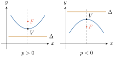
សមីការស្តង់ដានៃប៉ារ៉ាបូលដែលមានកំពូលត្រង់ចំណុច \(\displaystyle (h, k)\) គឺ
បើអ័ក្សឆ្លុះស្របអ័ក្សអាប់ស៊ីស នោះប៉ារ៉ាបូលមានសមីការស្តង់ដា \(\displaystyle (y - k)^{2} = 4p(x - h)\) ហើយមានកំណុំ \(\displaystyle (h + p, k)\) និងបន្ទាត់ប្រាប់ទិសមានសមីការ \(\displaystyle x = h - p\) ។
- ប៉ារ៉ាបូលបែរភាពផតទៅរកទិស \(\displaystyle x > 0\) បើ \(\displaystyle p > 0\)
- ប៉ារ៉ាបូលបែរភាពផតទៅរកទិស \(\displaystyle x < 0\) បើ \(\displaystyle p < 0\) ។
បើអ័ក្សឆ្លុះស្របអ័ក្សអរដោនេ នោះប៉ារ៉ាបូលមានសមីការស្តង់ដា \(\displaystyle (x - h)^{2} = 4p(y - k)\) ហើយមានកំណុំ \(\displaystyle (h, k + p)\) និងបន្ទាត់ប្រាប់ទិសមានសមីការ \(\displaystyle y = k - p\) ។
- ប៉ារ៉ាបូលបែរភាពផតទៅរកទិស \(\displaystyle y > 0\) បើ \(\displaystyle p > 0\)
- ប៉ារ៉ាបូលបែរភាពផតទៅរកទិស \(\displaystyle y < 0\) បើ \(\displaystyle p < 0\) ។
រកកូអរដោនេនៃកំពូល កំណុំ និងសមីការបន្ទាត់ប្រាប់ទិសនៃប៉ារ៉ាបូល \(\displaystyle (y - 2)^{2} = 4(x + 1)\) រួចហើយសង់ក្រាបប៉ារ៉ាបូលនេះ ។
គណនាកូអរដោនេនៃកំពូល កំណុំ និងសមីការបន្ទាត់ប្រាប់ទិសនៃប៉ារ៉ាបូល គេមានសមីការប៉ារ៉ាបូល \(\displaystyle (y - 2)^{2} = 4(x + 1)\) មានទម្រង់ \(\displaystyle (y - k)^{2} = 4p(x - h)\) (មានអ័ក្សឆ្លុះស្របអ័ក្សអាប់ស៊ីស) គេបាន \(\displaystyle h = -1\), \(\displaystyle k = 2\), \(\displaystyle 4p = 4 \implies p = 1\)
- កំពូល \(\displaystyle V(h, k) = V(-1, 2)\)
- កំណុំ \(\displaystyle F(h + p, k) = F(-1 + 1, 2) = F(0, 2)\)
- សមីការបន្ទាត់ប្រាប់ទិស \(\displaystyle \Delta : x = h - p = -1 - 1 = -2\)
ដូច្នេះ ប៉ារ៉ាបូលមានកំពូល \(\displaystyle V(-1, 2)\) កំណុំ \(\displaystyle F(0, 2)\) និងបន្ទាត់ប្រាប់ទិស \(\displaystyle \Delta : x = -2\) ។
- សង់ក្រាបតាងប៉ារ៉ាបូល \(\displaystyle (y - 2)^{2} = 4(x + 1)\)
កំពូល \(\displaystyle V(-1, 2)\) កំណុំ \(\displaystyle F(0, 2)\) បន្ទាត់ប្រាប់ទិស \(\displaystyle \Delta : x = -2\)
ចំណុចកាត់មាន \(\displaystyle \begin{cases} x + 1 = p = 1 \\ y - 2 = \pm 2p = \pm 2 \end{cases} \implies \begin{cases} x = 0 \\ y = 0; 4 \end{cases}\)
គេបានប៉ារ៉ាបូលកាត់តាមចំណុច \(\displaystyle (0, 0)\) និង \(\displaystyle (0, 4)\) ហើយប៉ារ៉ាបូលបែរភាពផតទៅរក \(\displaystyle x > 0\) ព្រោះ \(\displaystyle p = 1 > 0\) ។
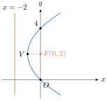
រកសមីការស្តង់ដានៃប៉ារ៉ាបូលដែលមានកំពូលត្រង់ចំណុច \(\displaystyle (2, 1)\) និងកំណុំត្រង់ចំណុច \(\displaystyle (2, 4)\) រួចសង់ក្រាបតាងប៉ារ៉ាបូលនោះ ។
- កំណត់សមីការស្តង់ដានៃប៉ារ៉ាបូល
គេមាន កំពូល \(\displaystyle (2, 1)\) និងកំណុំ \(\displaystyle (2, 4)\)
តាមកូអរដោនេនៃកំពូលនិងកំណុំ នោះប៉ារ៉ាបូលមានអ័ក្សឆ្លុះស្របអ័ក្សអរដោនេនិងសមីការស្តង់ដាមានទម្រង់ \(\displaystyle (x - h)^{2} = 4p(y - k)\)
ដោយកំពូល \(\displaystyle (2, 1)\) និងកំណុំ \(\displaystyle (2, 4)\) ត្រូវនឹងកំពូល \(\displaystyle V(h, k)\) និងកំណុំ \(\displaystyle F(h, k + p)\)
នាំឱ្យ \(\displaystyle \begin{cases} h = 2 \\ k = 1 \\ k + p = 4 \implies p = 4 - k = 4 - 1 = 3 \end{cases}\)
គេបាន សមីការប៉ារ៉ាបូល \(\displaystyle (x - 2)^{2} = 4 \times 3(y - 1) = 12(y - 1)\)
ដូច្នេះ សមីការប៉ារ៉ាបូល \(\displaystyle (x - 2)^{2} = 12(y - 1)\) ។ - សង់ក្រាបតាងប៉ារ៉ាបូល \(\displaystyle (x - 2)^{2} = 12(y - 1)\)
កំពូល \(\displaystyle (2, 1)\) កំណុំ \(\displaystyle F(2, 4)\)
បន្ទាត់ប្រាប់ទិស \(\displaystyle \Delta : y = k - p = 1 - 3 = -2\)
ចំណុចកាត់ : យកចំណុចកាត់ \(\displaystyle \begin{cases} y - 1 = p = 3 \\ x - 2 = \pm 2p = \pm 6 \end{cases} \implies \begin{cases} y = 4 \\ x = -4; 8 \end{cases}\)
គេបាន ប៉ារ៉ាបូលកាត់តាមចំណុច \(\displaystyle (-4, 4)\) និង \(\displaystyle (8, 4)\) ។
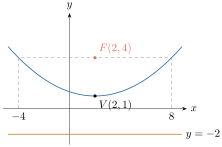
រកកូអរដោនេកំពូល កំណុំ និងសមីការបន្ទាត់ប្រាប់ទិសនៃប៉ារ៉ាបូល \(\displaystyle (y + 3)^{2} = -8(x - 4)\) រួចសង់ក្រាបតាងប៉ារ៉ាបូលនេះ ។
មើលចម្លើយ
កំពូល \(\displaystyle V(4, -3)\) កំណុំ \(\displaystyle F(2, -3)\) សមីការបន្ទាត់ប្រាប់ទិស \(\displaystyle x = 6\) ។
រកសមីការស្តង់ដានៃប៉ារ៉ាបូល ក្នុងករណី
- ក. មានកំពូល \(\displaystyle V(4, 1)\) កំណុំ \(\displaystyle F(2, 1)\)
- ខ. មានកំណុំ \(\displaystyle F(2, 5)\) និងសមីការបន្ទាត់ប្រាប់ទិស \(\displaystyle y = 3\)
- គ. មានកំពូល \(\displaystyle (-1, 1)\) និងអ័ក្សឆ្លុះរបស់វាស្របនឹងអ័ក្សអរដោនេហើយក្រាបកាត់តាមចំណុច \(\displaystyle (1, 0)\) ។
មើលចម្លើយ
- ក. \(\displaystyle (y - 1)^{2} = -8(x - 4)\)
- ខ. \(\displaystyle (x - 2)^{2} = 4(y - 4)\)
- គ. \(\displaystyle (x + 1)^{2} = -4(y - 1)\) ។
3.3. សមីការទូទៅនៃប៉ារ៉ាបូល
ដោយសមីការស្តង់ដានៃប៉ារ៉ាបូលមានទម្រង់
- អ័ក្សឆ្លុះជាអ័ក្សអរដោនេ \(\displaystyle (x - h)^{2} = 4p(y - k) \iff x^{2} - 2hx - 4py + h^{2} + 4pk = 0\) (1)
- អ័ក្សឆ្លុះជាអ័ក្សអាប់ស៊ីស \(\displaystyle (y - k)^{2} = 4p(x - h) \iff y^{2} - 2ky - 4px + k^{2} + 4ph = 0\) (2)
ក្នុងសមីការ (1) បើគេតាង \(\displaystyle A = -2h\), \(\displaystyle B = -4p\), \(\displaystyle C = h^{2} + 4pk\) និង (2) បើគេតាង \(\displaystyle B = -4p\), \(\displaystyle A = -2k\), \(\displaystyle C = k^{2} + 4ph\) នោះសមីការ (1) និង (2) អាចសរសេរទៅជាទម្រង់ \(\displaystyle x^{2} + Ax + By + C = 0\) និង \(\displaystyle y^{2} + Ay + Bx + C = 0\) ហៅថា សមីការទូទៅនៃប៉ារ៉ាបូល ។
សមីការទូទៅនៃប៉ារ៉ាបូលមានរាង
- \(\displaystyle x^{2} + Ax + By + C = 0\) មានអ័ក្សឆ្លុះស្របអ័ក្សអរដោនេ
- \(\displaystyle y^{2} + Ax + By + C = 0\) មានអ័ក្សឆ្លុះស្របអ័ក្សអាប់ស៊ីស ហើយ \(\displaystyle A, B, C\) ជាចំនួនថេរ ។
គេមានសមីការប៉ារ៉ាបូល \(\displaystyle y^{2} + 8y - 8x = 0\) ។
- ក. បំប្លែងសមីការប៉ារ៉ាបូលខាងលើទៅជាទម្រង់ស្តង់ដា
- ខ. រកកូអរដោនេនៃកំពូល កំណុំ និងសមីការបន្ទាត់ប្រាប់ទិសនៃប៉ារ៉ាបូល
- គ. រួចសង់ក្រាបតាងប៉ារ៉ាបូលនោះ ។
- ក. បំប្លែងសមីការប៉ារ៉ាបូល ទៅជាទម្រង់ស្តង់ដា
គេមានសមីការ \(\displaystyle y^{2} + 8y - 8x = 0\)
\(\displaystyle y^{2} + 8y = 8x\)
\(\displaystyle y^{2} + 8y + 16 = 8x + 16\)
\(\displaystyle (y + 4)^{2} = 8(x + 2)\) ជាសមីការស្តង់ដានៃប៉ារ៉ាបូល ។ - ខ.
គណនាកូអរដោនេនៃកំពូល កំណុំ និងសមីការបន្ទាត់ប្រាប់ទិសនៃប៉ារ៉ាបូល
ដោយសមីការ \(\displaystyle (y + 4)^{2} = 8(x + 2)\) មានអ័ក្សឆ្លុះជាអ័ក្សអាប់ស៊ីស ហើយមានទម្រង់ដូចសមីការ \(\displaystyle (y - k)^{2} = 4p(x - h)\)
នោះ \(\displaystyle k = -4\), \(\displaystyle h = -2\), \(\displaystyle 4p = 8 \implies p = 2\)
គេបាន- កំពូល \(\displaystyle V(h, k) = V(-2, -4)\)
- កំណុំ \(\displaystyle F(h + p, k) = F(-2 + 2, -4) = F(0, -4)\)
- សមីការបន្ទាត់ប្រាប់ទិស \(\displaystyle \Delta : x = h - p = -2 - 2 = -4\)
ដូច្នេះ ប៉ារ៉ាបូលមាន កំពូល \(\displaystyle V(-2, -4)\) កំណុំ \(\displaystyle F(0, -4)\) និងសមីការបន្ទាត់ប្រាប់ទិស \(\displaystyle \Delta : x = -4\) ។
- គ.
សង់ក្រាបតាងប៉ារ៉ាបូល \(\displaystyle (y + 4)^{2} = 8(x + 2)\)
- ដៅកំពូល \(\displaystyle V(-2, -4)\) កំណុំ \(\displaystyle F(0, -4)\)
- សង់បន្ទាត់ប្រាប់ទិស \(\displaystyle \Delta : x = -4\)
- ចំណុចកាត់មាន : \(\displaystyle \begin{cases} x + 2 = p = 2 \\ y + 4 = \pm 2p = \pm 4 \end{cases} \implies \begin{cases} x = 0 \\ y = -8; 0 \end{cases}\)
គេបានប៉ារ៉ាបូលកាត់តាមចំណុច \(\displaystyle (0, 0)\) និង \(\displaystyle (0, -8)\) ។
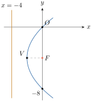
រកសមីការនៃប៉ារ៉ាបូលដែលមាន អ័ក្សឆ្លុះស្របនឹងអ័ក្សអរដោនេនិងក្រាបកាត់តាមចំណុច \(\displaystyle (1, 2)\), \(\displaystyle (-5, 5)\) និង \(\displaystyle (5, 10)\) ។
កំណត់សមីការនៃប៉ារ៉ាបូល ដោយប៉ារ៉ាបូលមានអ័ក្សឆ្លុះស្របនឹងអ័ក្សអរដោនេ នោះសមីការប៉ារ៉ាបូលមានទម្រង់ \(\displaystyle x^{2} + Ax + By + C = 0\) ដែល \(\displaystyle A, B, C \in \mathbb{R}\) តែក្រាបនៃប៉ារ៉ាបូលកាត់តាមចំណុច \(\displaystyle (1, 2)\), \(\displaystyle (-5, 5)\) និង \(\displaystyle (5, 10)\) នោះ
យក \(\displaystyle (2) - (1)\) និង \(\displaystyle (3) - (2)\) គេបាន
យក \(\displaystyle (4) + (5)\) គេបាន \(\displaystyle 4A = 8 \implies A = 2\) តាម \(\displaystyle (5)\): \(\displaystyle B = -2A = -4\) តាម \(\displaystyle (1)\): \(\displaystyle C = -1 - A - 2B = -1 - 2 + 8 = 5\) គេបាន សមីការ \(\displaystyle x^{2} + Ax + By + C = 0 \iff x^{2} + 2x - 4y + 5 = 0\) ។ ដូច្នេះ សមីការប៉ារ៉ាបូល \(\displaystyle x^{2} + 2x - 4y + 5 = 0\) ។
រកកូអរដោនេកំពូល កំណុំ និងសមីការបន្ទាត់ប្រាប់ទិសនៃប៉ារ៉ាបូល \(\displaystyle y = -\frac{1}{2}x^{2} - x + \frac{1}{2}\) រួចសង់ប៉ារ៉ាបូលនោះ ។
មើលចម្លើយ
កំពូល \(\displaystyle V(-1, 1)\) កំណុំ \(\displaystyle F\left(-1, \frac{1}{2}\right)\) សមីការបន្ទាត់ប្រាប់ទិស \(\displaystyle y = \frac{3}{2}\) ។
រកសមីការនៃប៉ារ៉ាបូលដែលមាន អ័ក្សឆ្លុះស្របនឹងអ័ក្សអាប់ស៊ីស និងក្រាបកាត់តាមចំណុច \(\displaystyle (0, -1)\), \(\displaystyle (-3, -6)\) និង \(\displaystyle (-8, 4)\) ។
មើលចម្លើយ
សមីការនៃប៉ារ៉ាបូល \(\displaystyle y^{2} + 4y + 4x = 0\) ។
4. លក្ខណៈអុបទិចនៃប៉ារ៉ាបូល
កញ្ចក់រាងប៉ារ៉ាបូលមានលក្ខណៈចំណាំងផ្លាតដូចកញ្ចក់ប្លង់ដែរ ។
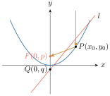
គូសបន្ទាត់ \(\displaystyle l\) ប៉ះប៉ារ៉ាបូលត្រង់ \(\displaystyle P(x_{0}, y_{0})\) ។ ប៉ារ៉ាបូលមានសមីការ \(\displaystyle x^{2} = 4py\) និងមានកំណុំ \(\displaystyle F(0, p)\) ។ តាង \(\displaystyle \alpha\) ជាមុំផ្គុំរវាងបន្ទាត់ \(\displaystyle l\) និងអង្កត់ \(\displaystyle FP\) ហើយ \(\displaystyle \beta\) ជាមុំផ្គុំរវាងបន្ទាត់ \(\displaystyle l\) និងបន្ទាត់ឈរដែលកាត់តាម \(\displaystyle P\) ស្របនឹងអ័ក្សឆ្លុះ ។ បន្ទាត់ប៉ះត្រង់ចំណុច \(\displaystyle P\) មានមេគុណប្រាប់ទិស \(\displaystyle y' = \frac{2x_{0}}{4p} = \frac{x_{0}}{2p}\) ។ សមីការបន្ទាត់ប៉ះគឺ \(\displaystyle y - y_{0} = \frac{x_{0}}{2p}(x - x_{0})\) ។ បន្ទាត់ប៉ះនេះកាត់អ័ក្សអរដោនេត្រង់ចំណុច \(\displaystyle Q(0, q)\) គេបាន \(\displaystyle q = y_{0} - \frac{x_{0}^{2}}{2p} = \frac{x_{0}^{2}}{4p} - \frac{x_{0}^{2}}{2p} = -\frac{x_{0}^{2}}{4p}\) ប្រវែងអង្កត់ \(\displaystyle FQ\) គឺ \(\displaystyle p - q = p + \frac{x_{0}^{2}}{4p}\) ។ តាមរូបមន្ត ចម្ងាយរវាងពីរចំណុចគេបានប្រវែង \(\displaystyle FP\) គឺ
ដូច្នេះ ត្រីកោណ \(\displaystyle FPQ\) ជាត្រីកោណសមបាតគេទាញបាន \(\displaystyle \alpha = \beta\) ។ មានន័យថា កាំពន្លឺ \(\displaystyle l_{1}\) ដែលស្របនឹងអ័ក្សឆ្លុះនៃប៉ារ៉ាបូលមកប៉ះប៉ារ៉ាបូលត្រង់ \(\displaystyle P\) ហើយចាំងផ្លាតទៅតាម \(\displaystyle PF\) ។
បន្ទាត់ស្របនឹងអ័ក្សឆ្លុះនៃប៉ារ៉ាបូលដែលកាត់ប៉ារ៉ាបូលត្រង់ \(\displaystyle M\) និងបន្ទាត់ \(\displaystyle MF\) ផ្គុំជាមួយបន្ទាត់ប៉ះប៉ារ៉ាបូលត្រង់ \(\displaystyle M\) បានមុំស្មើគ្នា ។ ដូច្នេះគ្រប់កាំពន្លឺស្របនឹងអ័ក្សនៃប៉ារ៉ាបូលដែលមកប៉ះប៉ារ៉ាបូលចាំងផ្លាតទៅចំណុចតែមួយគឺកំណុំ \(\displaystyle F\) នៃប៉ារ៉ាបូល ។
លក្ខណៈអុបទិចនេះមានការអនុវត្តជាច្រើន ។ ឧទាហរណ៍ : រាងបន្ទះផ្លាតពន្លឺនៃចង្កៀងបញ្ចាំងមើលផ្លូវគឺបានមកពីរង្វិលប៉ារ៉ាបូលជុំវិញអ័ក្សឆ្លុះ ។ បើប្រភពពន្លឺដាក់នៅត្រង់កំណុំ \(\displaystyle F\) នោះកាំពន្លឺចាំងប៉ះនិងចាំងផ្លាតមកវិញតាមបន្ទាត់ស្របនឹងអ័ក្សឆ្លុះ គេបានបាច់ពន្លឺស្របមួយ ។ តាមច្បាប់រូបវិទ្យាមុំចំណាំងផ្លាតស្មើនឹងមុំចំណាំងប៉ះ ។
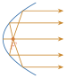
ដូចគ្នានេះដែរ គោលការណ៍នេះត្រូវបានគេយកទៅអនុវត្តក្នុងសង់កញ្ចក់កែវយឺត ។ កាំពន្លឺចាំងប៉ះដែលស្របនឹងអ័ក្សឆ្លុះទៅប៉ះកញ្ចក់ប៉ារ៉ាបូល ចាំងផ្លាតមកវិញទៅកាន់គ្នាត្រង់កំណុំ ។
លំហាត់
រកកូអរដោនេកំពូល កំណុំ និងសមីការបន្ទាត់ប្រាប់ទិសនៃប៉ារ៉ាបូលខាងក្រោម រួចសង់ក្រាប
- ក. \(\displaystyle y^{2} = 4x\)
- ខ. \(\displaystyle y^{2} = 12x\)
- គ. \(\displaystyle x^{2} = 8y\)
- ឃ. \(\displaystyle x^{2} = -2y\)
- ង. \(\displaystyle (y + 2)^{2} = 4(x - 1)\)
- ច. \(\displaystyle (y - 1)^{2} = -(x + 3)\)
- ឆ. \(\displaystyle (x - 3)^{2} = 2(y + 2)\)
- ជ. \(\displaystyle (x - 1)^{2} + 8(y + 2) = 0\)
- ឈ. \(\displaystyle (x + 3) + (y - 2)^{2} = 0\)
- ញ. \(\displaystyle \left(x + \frac{1}{2}\right)^{2} = 4(y - 3)\) ។
បំប្លែងសមីការទូទៅនីមួយៗខាងក្រោមទៅជាសមីការស្តង់ដា
- ក. \(\displaystyle x^{2} - 2x - 3y - 8 = 0\)
- ខ. \(\displaystyle 4x - y^{2} - 2y - 33 = 0\)
- គ. \(\displaystyle y^{2} - 4y - 4x = 0\)
- ឃ. \(\displaystyle x^{2} + 4x + 4y - 4 = 0\)
- ង. \(\displaystyle 9y^{2} - 36y - 2x + 24 = 0\)
- ច. \(\displaystyle y^{2} - 4x + 4y + 24 = 0\) ។
រកកូអរដោនេនៃកំពូល កំណុំ និងសមីការបន្ទាត់ប្រាប់ទិសនៃប៉ារ៉ាបូលតាងសមីការនីមួយៗខាងក្រោម រួចសង់ក្រាប :
- ក. \(\displaystyle y = \frac{1}{4}(x^{2} - 2x + 5)\)
- ខ. \(\displaystyle y^{2} + 6y + 8x + 25 = 0\)
- គ. \(\displaystyle x^{2} + 4x + 4y - 4 = 0\)
- ឃ. \(\displaystyle y^{2} + 4y + 8x - 12 = 0\)
- ង. \(\displaystyle 2x^{2} + 4x - 9y + 20 = 0\)
- ច. \(\displaystyle 4y^{2} + 8y - 3x + 10 = 0\) ។
រកសមីការនៃប៉ារ៉ាបូលដែលកំណត់ដោយលក្ខខណ្ឌដូចខាងក្រោម ៖
- ក. កំពូល \(\displaystyle V(0, 0)\) និងកំណុំ \(\displaystyle F(2, 0)\)
- ខ. កំពូល \(\displaystyle V(3, 2)\) និងកំណុំ \(\displaystyle F(1, 2)\)
- គ. កំពូល \(\displaystyle V(0, -4)\) និងសមីការបន្ទាត់ប្រាប់ទិស \(\displaystyle y - 2 = 0\)
- ឃ. កំពូល \(\displaystyle V(-2, 1)\) និងសមីការបន្ទាត់ប្រាប់ទិស \(\displaystyle x - 1 = 0\)
- ង. កំណុំ \(\displaystyle F(2, 1)\) និងសមីការបន្ទាត់ប្រាប់ទិស \(\displaystyle x = -2\)
- ច. អ័ក្សឆ្លុះនៃប៉ារ៉ាបូលស្របនឹងអ័ក្សអាប់ស៊ីស ហើយក្រាបកាត់តាមចំណុច \(\displaystyle (4, 2)\), \(\displaystyle (0, 0)\), និងចំណុច \(\displaystyle (3, -3)\) ។
- រកសមីការនៃបន្ទាត់ប៉ះទៅនឹងក្រាបនៃប៉ារ៉ាបូល \(\displaystyle y^{2} = 2x\) ដែលកាត់តាមចំណុច \(\displaystyle (-4, 1)\) ។
- រកសមីការនៃប៉ារ៉ាបូលដែលអ័ក្សឆ្លុះស្របនឹងអ័ក្សអរដោនេ ហើយមានកំពូល \(\displaystyle V(0, 2)\) ដែលកាត់តាមចំណុច \(\displaystyle P(4, 8)\) ។
- ចំណុច \(\displaystyle P\) មួយចល័តដែលមានចម្ងាយស្មើនឹងចំណុច \(\displaystyle F(-1, 2)\) និងបន្ទាត់មួយមានសមីការ \(\displaystyle y - 6 = 0\) ។ រកសមីការនៃសំណុំចំណុចនៃចំណុច \(\displaystyle P\) ។
- រកសមីការនៃប៉ារ៉ាបូលដែលមានអ័ក្សឆ្លុះជាអ័ក្សឈរ ហើយក្រាបវាកាត់តាមចំណុច \(\displaystyle A(2, 5)\), \(\displaystyle B(-2, -3)\) និង \(\displaystyle C(1, 6)\) ។
- រកសមីការនៃប៉ារ៉ាបូលដែលមានអ័ក្សឆ្លុះជាអ័ក្សដេក ហើយក្រាបវាកាត់តាមចំណុច \(\displaystyle A(-1, 1)\), \(\displaystyle B(11, -2)\) និង \(\displaystyle C(5, -1)\) ។
- តាង \(\displaystyle m\) និង \(\displaystyle b\) ជាចំនួនពិតពីរខុសពីសូន្យ ។ បើបន្ទាត់ \(\displaystyle y = mx + b\) ប៉ះប៉ារ៉ាបូល \(\displaystyle y^{2} = 4px\) ត្រង់ចំណុចមួយ ។ បង្ហាញថា \(\displaystyle p = mb\) ។ បង្ហាញថា បន្ទាត់ប៉ះនឹងប៉ារ៉ាបូល \(\displaystyle y^{2} = 4px\) ត្រង់ចំណុច \(\displaystyle P(x_{1}, y_{1})\) មានមេគុណប្រាប់ទិសស្មើនឹង \(\displaystyle \frac{y_{1}}{2x_{1}}\) ។
ថាសផ្កាយរណបមួយមានរាងជាផ្ទៃដែលបានពីរង្វិលនៃប៉ារ៉ាបូលជុំវិញអ័ក្សរបស់វា ។ ការផ្សាយចេញពីផ្កាយរណបបានមកប៉ះផ្ទៃនៃថាស ហើយត្រូវបានចាំងផ្លាតទៅប្រសព្វគ្នានៅត្រង់ចំណុចមួយដែលបានដាក់គ្រឿងទទួល (រូបទី 1) ។ បើមាត់ថាសមានអង្កត់ផ្ចិត \(\displaystyle 3\text{ m}\) និងមានជម្រៅពីផ្ចិតទៅកំពូល \(\displaystyle 1.2\text{ m}\) ។ តើគ្រឿងទទួលត្រូវដាក់នៅត្រង់ទីតាំងណា ?
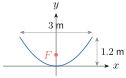
- ចង្កៀងភ្លើងបញ្ចាំងមើលផ្លូវមួយមានបន្ទះផ្លាតពន្លឺជាផ្ទៃដែលបានមកពីរង្វិលនៃប៉ារ៉ាបូលជុំវិញអ័ក្សរបស់វា ។ បើប្រសព្វពន្លឺស្ថិតលើអ័ក្សឆ្លុះចម្ងាយ \(\displaystyle 0.6\text{ m}\) ពីបាត និងនៅមុខកាត់មាត់ចង្កៀងមានអង្កត់ផ្ចិត \(\displaystyle 1.5\text{ m}\) ។ តើចង្កៀងនេះមានជម្រៅប៉ុន្មានម៉ែត្រ ?
ផ្នែកខាងក្រោមនៃស្ពានមួយមានរាងជាប៉ារ៉ាបូល ។ ចម្ងាយរវាងចុងនៃមែកប៉ារ៉ាបូលស្មើនឹង \(\displaystyle 36\text{ m}\) ផ្នែកខាងក្រោមនៃស្ពានដែលមានរាងប៉ារ៉ាបូលមានកម្ពស់អតិបរមា \(\displaystyle 7.5\text{ m}\) (រូបទី 2) ។ រកកម្ពស់នៃចំណុចនៅលើប៉ារ៉ាបូលដែលមានចម្ងាយ \(\displaystyle 3\text{ m}\), \(\displaystyle 9\text{ m}\) និង \(\displaystyle 15\text{ m}\) ពីផ្ចិត ។
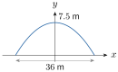
ខ្សែកាបនៃស្ពានព្យួរមួយមានរាងជាប៉ារ៉ាបូលត្រូវបានចងព្យួរនៅចន្លោះប៉មពីរមានចម្ងាយ \(\displaystyle 120\text{ m}\) ពីគ្នា និងមានកម្ពស់ \(\displaystyle 15\text{ m}\) ពីផ្លូវថ្នល់ (រូបទី 3) ។ (សម្គាល់៖ ក្នុងសៀវភៅពុម្ពទំព័រ 183 អត្ថបទសរសេរ \(\displaystyle 120\text{ m}\) ប៉ុន្តែរូបដាក់ \(\displaystyle (120, 15)\) ដែលត្រូវនឹងចម្ងាយ \(\displaystyle 240\text{ m}\) ។) ខ្សែកាបនេះបានប៉ះផ្ទៃផ្លូវត្រង់ចំណុចកណ្តាលរវាងប៉មទាំងពីរ ។ រកសមីការប៉ារ៉ាបូលនៃខ្សែកាបនីមួយៗ ។
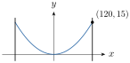
ចម្លើយលំហាត់
- ក. កំពូល \(\displaystyle V(0, 0)\), កំណុំ \(\displaystyle F(1, 0)\), បន្ទាត់ប្រាប់ទិស \(\displaystyle x = -1\) ។
- ខ. កំពូល \(\displaystyle V(0, 0)\), កំណុំ \(\displaystyle F(3, 0)\), បន្ទាត់ប្រាប់ទិស \(\displaystyle x = -3\) ។
- គ. កំពូល \(\displaystyle V(0, 0)\), កំណុំ \(\displaystyle F(0, 2)\), បន្ទាត់ប្រាប់ទិស \(\displaystyle y = -2\) ។
- ឃ. កំពូល \(\displaystyle V(0, 0)\), កំណុំ \(\displaystyle F\left(0, -\frac{1}{2}\right)\), បន្ទាត់ប្រាប់ទិស \(\displaystyle y = \frac{1}{2}\) ។
- ង. កំពូល \(\displaystyle V(1, -2)\), កំណុំ \(\displaystyle F(2, -2)\), បន្ទាត់ប្រាប់ទិស \(\displaystyle x = 0\) ។
- ច. កំពូល \(\displaystyle V(-3, 1)\), កំណុំ \(\displaystyle F\left(-\frac{13}{4}, 1\right)\), បន្ទាត់ប្រាប់ទិស \(\displaystyle x = -\frac{11}{4}\) ។
- ឆ. កំពូល \(\displaystyle V(3, -2)\), កំណុំ \(\displaystyle F\left(3, -\frac{3}{2}\right)\), បន្ទាត់ប្រាប់ទិស \(\displaystyle y = -\frac{5}{2}\) ។
- ជ. កំពូល \(\displaystyle V(1, -2)\), កំណុំ \(\displaystyle F(1, -4)\), បន្ទាត់ប្រាប់ទិស \(\displaystyle y = 0\) ។
- ឈ. កំពូល \(\displaystyle V(-3, 2)\), កំណុំ \(\displaystyle F\left(-\frac{13}{4}, 2\right)\), បន្ទាត់ប្រាប់ទិស \(\displaystyle x = -\frac{11}{4}\) ។
- ញ. កំពូល \(\displaystyle V\left(-\frac{1}{2}, 3\right)\), កំណុំ \(\displaystyle F\left(-\frac{1}{2}, 4\right)\), បន្ទាត់ប្រាប់ទិស \(\displaystyle y = 2\) ។
- ក. \(\displaystyle (x - 1)^{2} = 3(y + 3)\)
- ខ. \(\displaystyle (y + 1)^{2} = 4(x - 8)\)
- គ. \(\displaystyle (y - 2)^{2} = 4(x + 1)\)
- ឃ. \(\displaystyle (x + 2)^{2} = -4(y - 2)\)
- ង. \(\displaystyle (y - 2)^{2} = \frac{2}{9}(x + 6)\)
- ច. \(\displaystyle (y + 2)^{2} = 4(x - 5)\) ។
- ក. \(\displaystyle (x - 1)^{2} = 4(y - 1)\) : កំពូល \(\displaystyle V(1, 1)\), កំណុំ \(\displaystyle F(1, 2)\), បន្ទាត់ប្រាប់ទិស \(\displaystyle y = 0\) ។
- ខ. \(\displaystyle (y + 3)^{2} = -8(x + 2)\) : កំពូល \(\displaystyle V(-2, -3)\), កំណុំ \(\displaystyle F(-4, -3)\), បន្ទាត់ប្រាប់ទិស \(\displaystyle x = 0\) ។
- គ. \(\displaystyle (x + 2)^{2} = -4(y - 2)\) : កំពូល \(\displaystyle V(-2, 2)\), កំណុំ \(\displaystyle F(-2, 1)\), បន្ទាត់ប្រាប់ទិស \(\displaystyle y = 3\) ។
- ឃ. \(\displaystyle (y + 2)^{2} = -8(x - 2)\) : កំពូល \(\displaystyle V(2, -2)\), កំណុំ \(\displaystyle F(0, -2)\), បន្ទាត់ប្រាប់ទិស \(\displaystyle x = 4\) ។
- ង. \(\displaystyle (x + 1)^{2} = \frac{9}{2}(y - 2)\) : កំពូល \(\displaystyle V(-1, 2)\), កំណុំ \(\displaystyle F\left(-1, \frac{25}{8}\right)\), បន្ទាត់ប្រាប់ទិស \(\displaystyle y = \frac{7}{8}\) ។
- ច. \(\displaystyle (y + 1)^{2} = \frac{3}{4}(x - 2)\) : កំពូល \(\displaystyle V(2, -1)\), កំណុំ \(\displaystyle F\left(\frac{35}{16}, -1\right)\), បន្ទាត់ប្រាប់ទិស \(\displaystyle x = \frac{29}{16}\) ។
- ក. \(\displaystyle y^{2} = 8x\)
- ខ. \(\displaystyle (y - 2)^{2} = -8(x - 3)\)
- គ. \(\displaystyle x^{2} = -24(y + 4)\)
- ឃ. \(\displaystyle (y - 1)^{2} = -12(x + 2)\)
- ង. \(\displaystyle (y - 1)^{2} = 8x\)
- ច. \(\displaystyle y^{2} + \frac{4}{3}y - \frac{5}{3}x = 0\) ឬ \(\displaystyle 3y^{2} + 4y - 5x = 0\) ។
- បន្ទាត់ប៉ះមានសមីការ \(\displaystyle x - 4y + 8 = 0\) និង \(\displaystyle x + 2y + 2 = 0\) (ឬ \(\displaystyle y = \frac{1}{4}x + 2\) និង \(\displaystyle y = -\frac{1}{2}x - 1\)) ។
- \(\displaystyle x^{2} = \frac{8}{3}(y - 2)\) ។
- \(\displaystyle (x + 1)^{2} = -8(y - 4)\) ។
- \(\displaystyle x^{2} - 2x + y - 5 = 0\) ឬ \(\displaystyle (x - 1)^{2} = -(y - 6)\) ។
- \(\displaystyle y^{2} - 3y - x + 1 = 0\) ឬ \(\displaystyle \left(y - \frac{3}{2}\right)^{2} = x + \frac{5}{4}\) ។
- បន្ទាត់ \(\displaystyle y = mx + b\) ប៉ះ \(\displaystyle y^{2} = 4px\) កាលណាសមីការ \(\displaystyle m^{2}x^{2} + (2mb - 4p)x + b^{2} = 0\) មានឌីស្គ្រីមីណង់ \(\displaystyle \Delta = 16p(p - mb) = 0 \implies p = mb\) (ព្រោះ \(\displaystyle p \neq 0\)) ។ ត្រង់ \(\displaystyle P(x_{1}, y_{1})\) គេបាន \(\displaystyle 2yy' = 4p \implies y' = \frac{2p}{y_{1}}\) ហើយដោយ \(\displaystyle 4px_{1} = y_{1}^{2} \implies 2p = \frac{y_{1}^{2}}{2x_{1}}\) ដូច្នេះ \(\displaystyle m = \frac{y_{1}}{2x_{1}}\) ។
- តាងកំពូលនៅគល់ \(\displaystyle O(0, 0)\) និងអ័ក្សឆ្លុះជាអ័ក្ស \(\displaystyle Oy\) នោះ \(\displaystyle x^{2} = 4py\) កាត់តាម \(\displaystyle (1.5, 1.2)\) បាន \(\displaystyle p = \frac{1.5^{2}}{4(1.2)} = \frac{15}{32} = 0.46875\text{ m}\) ។ ដូច្នេះគ្រឿងទទួលត្រូវដាក់លើអ័ក្សឆ្លុះចម្ងាយ \(\displaystyle \frac{15}{32}\text{ m} \approx 0.47\text{ m}\) ពីកំពូល ។
- តាងកំពូលនៅ \(\displaystyle (0, 0)\) និងកំណុំ \(\displaystyle (0, 0.6)\) បាន \(\displaystyle x^{2} = 2.4y\) ។ នៅមាត់ចង្កៀង \(\displaystyle x = 0.75\text{ m} \implies y = \frac{0.75^{2}}{2.4} = \frac{15}{64} = 0.234375\text{ m} \approx 0.23\text{ m}\) ។
- តាងប៉ារ៉ាបូល \(\displaystyle x^{2} = -\frac{216}{5}(y - 7.5)\) ដែលកាត់តាម \(\displaystyle (18, 0)\) ។ ពេល \(\displaystyle x = 3\text{ m} \Rightarrow y = \frac{175}{24} \approx 7.29\text{ m}\) ; ពេល \(\displaystyle x = 9\text{ m} \Rightarrow y = \frac{45}{8} = 5.625\text{ m}\) ; ពេល \(\displaystyle x = 15\text{ m} \Rightarrow y = \frac{55}{24} \approx 2.29\text{ m}\) ។
- តាងកំពូលនៅគល់ \(\displaystyle O(0, 0)\) ។ តាមអត្ថបទចម្ងាយប៉ម \(\displaystyle 120\text{ m}\) នោះកាត់តាម \(\displaystyle (60, 15)\) បាន \(\displaystyle x^{2} = 240y\) (ឬបើតាមរូបកាត់តាម \(\displaystyle (120, 15)\) បាន \(\displaystyle x^{2} = 960y\)) ។
ខ្លឹមសារ៖ សៀវភៅពុម្ពគណិតវិទ្យាថ្នាក់ទី១២ របស់ក្រសួងអប់រំ យុវជន និងកីឡា · វាយអត្ថបទ គូររូបភាពឡើងវិញ និងរៀបចំលើអនឡាញដោយលោកគ្រូ សាន សុខលី សម្រាប់ការសិក្សាដោយឥតគិតថ្លៃ និងមិនរកប្រាក់ចំណេញ។ មិនមែនជាការបោះពុម្ពផ្លូវការរបស់ក្រសួងទេ។